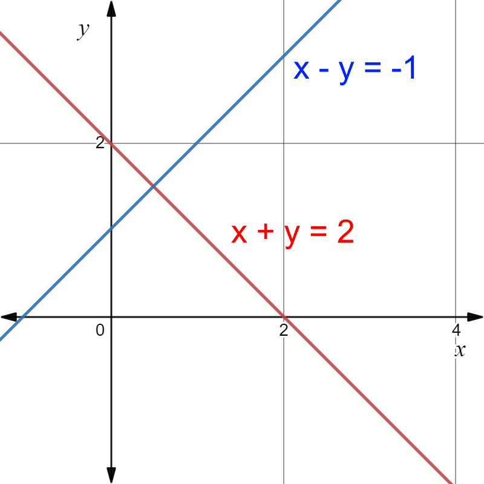
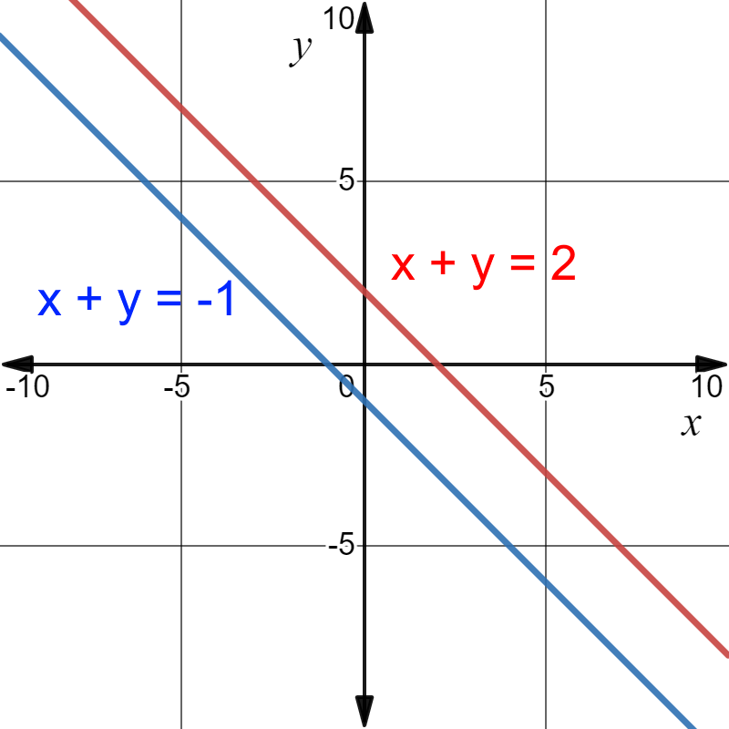
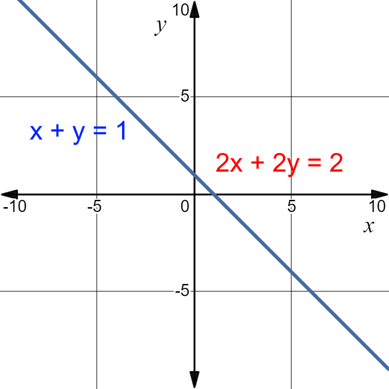

1.1 Systems of Equations, Geometry¶
Let \(a\), \(b\), and \(c\) be real numbers (\(a\) and \(b\) are not both zero). Then, the graph of an equation with the following form
is a straight line. Such an equation is called a linear equation, and the variables of this linear equation are \(x\) and \(y\).
For example, \(x-y=0\) is a linear equation.

Note that, here, \(x\) and \(y\) are the variables. However, in general, when more than two variables are involved, variables are often demonstrated with some subscripts. For example, \(x_1\), \(x_2\), …, \(x_n\) are variables for an equation of the form
Moreover, \(\Sigma\) (Sigma) is often used to demonstrate a sum of some terms. For example,
also can be shows as follows
which shows a sumation of \(n\) terms. This also know as summation notation.
A system of equations is a collection of equations. For example, for linear equations \(a_{11}x_1+\ldots+a_{1n}x_{n}=b_1\), \(a_{21}x_1+\ldots+a_{2n}x_{n}=b_2\), \(\ldots\), \(a_{m1}x_1+\ldots+a_{mn}x_{n}=b_m\).
In terms of summation notation, the above linear equation can be written as
Example: The following system of equation,
is linear and has
Variables (unknowns): \(x_1, x_2\) and \(x_3\),
Coefficients (the first equation): \(1, -2\), \(-7\),
Coefficients (the second equation): \(-1, 3\), \(6\),
Constant term (the first equation): \(7\),
Constant term (the second equation): \(25\pi\).
A system of equations is called homogeneous if all the right hand side values are zero (each equation in the system is equal to zero).
Example: The system of equation,
is homogeneous.
Example: Show that \(x = -2\), \(y = 5\), \(z = 0\) and \(x = 0\), \(y = 4\), \(z = -1\) are both solutions to the system,
Basically, we need to plug each solution into the system of equation.
Try \(x = -2,~y = 5,~z = 0\)
Try \(x = 0,~y = 4,~z = -1\)
1.1.1 Possible sets of solution for two equations and two variables¶
When a system of linear equations has only two variables, then the solutions to that system of linear equations can be explained geometrically using a graph. The graph of an equation \(ax+by = c\) is a straight line when \(a\) and \(b\) are not both zero at the same time.
For the following system of linear equations (with two variables), there are three possibilities.
Note that each equation can be shown on a graph using a straight line, and there are three possibilities for the corresponding straight lines:
The lines intersect at a only one point. Then the system has a unique solution corresponding to that point.
Example: For the following system of linear equations,
we have,
{kind=link}
As can be seen, \((x, y) = (0.5, 1.5)\) is a solution. In this case, it’s the only solution (unique solution).
The lines are parallel (and distinct) and so do not intersect. Then the system has no solution.
Example: For the following system of linear equations,
we have,
{kind=link}
The two lines are parallel and there is no solution.
The lines are identical. Then the system has infinitely many solutions.
Example: For the following system of linear equations,
we have,
{kind=link}
1.1.2 Consistent and inconsistent linear systems¶
A system of equations is called inconsistent when there is no solution for this system of equations, and it is called consistent when there is at least one solution for it.
The graph of \(ax+by+cz = d\) (it has hree variables) is a plane.
{kind=link}
Fig. 1 a) three planes intersecting in a line, b) three planes intersecting in a point, c) three planes with no intersection, d) three planes with no intersection¶
This graphical method has its limitations. When more than three variables are involved, we can not graph the planes anymore.
Refrences¶
Kuttler, Kenneth. “A First Course in Linear Algebra (Lyryx).” (2021).
Nicholson, W. Keith. “Linear Algebra with Applications (Lyryx).” (2021).